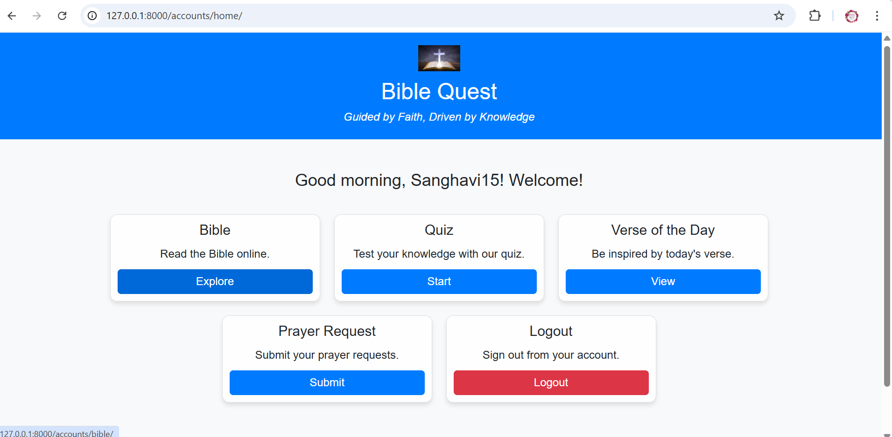
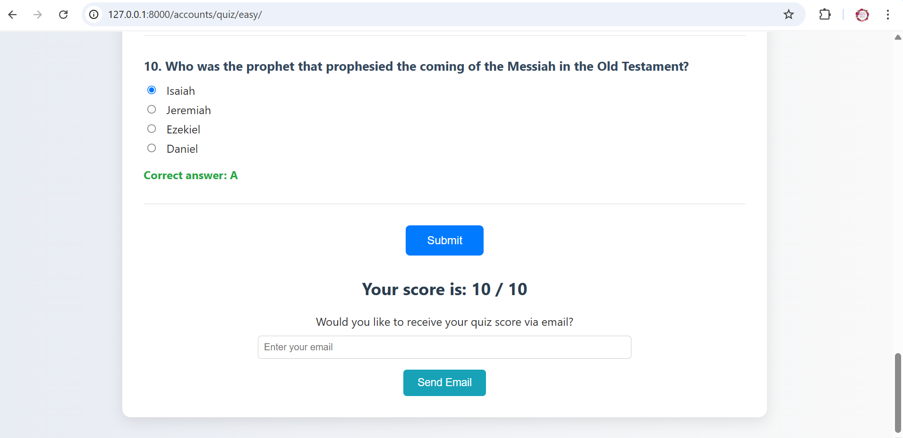
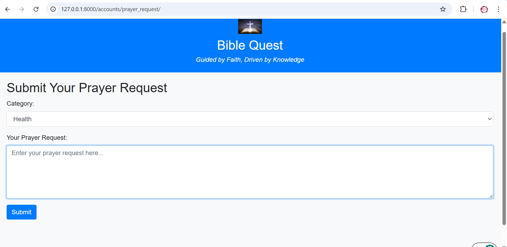
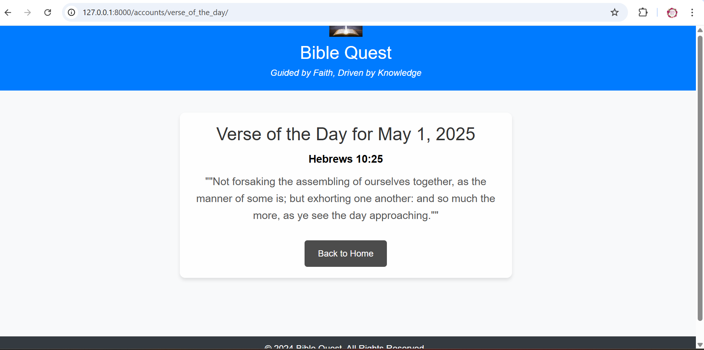

📖 BibleQuest – Interactive Bible Study Web App
💡 Project Overview
BibleQuest is a full-stack faith-based web application that brings interactive Bible engagement to life. Designed as my master's project, it combines my technical skills with my spiritual journey. Users can search Scripture, receive daily verses, take quizzes with email feedback, and share prayer requests — creating a digital space rooted in encouragement and faith.
🎯 Objectives
- Deliver a secure, user-friendly Bible platform
- Enable Scripture access with interactive features
- Encourage users with daily verses and community prayer
- Build user engagement through knowledge quizzes
🧰 Tools & Technologies
- Django (Python Backend)
- Bootstrap (Frontend Styling)
- SQLite Database
- Bible API Integration
- Email Module for Score Delivery
🏠 Dashboard Overview
After login, users land on a sleek dashboard that gives them quick access to all features: Bible, Quiz, Verse of the Day, and Prayer Requests.
📖 Chapter Viewer
Users can read the Bible by selecting a testament, book, and chapter. It dynamically loads content through the Bible API.

🧪 Quiz & Email Score
Users can test their Bible knowledge through multiple-choice quizzes. After submission, they receive a score and can email it to themselves.
🙏 Prayer Request Wall
Users can anonymously submit prayer requests and read others’ requests to encourage and support one another.
🌟 Verse of the Day
Each day, a verse is shown to uplift and inspire users. It's pulled from Scripture and styled in a clean layout.
📈 Outcome & Reflection
BibleQuest helped me connect my technical learning with a higher purpose. I gained real-world skills in authentication, form handling, API integration, and user experience design — while also building something I care deeply about. It’s a reflection of faith through code.